Jak vyrobit štít
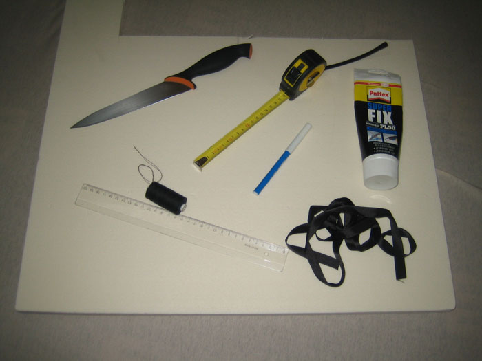Základem je nakoupit či jinak získat materiál. Základem všeho je tvrzený polystyren. Ten se prodává v řetězcích typu Hornbach či Bauhaus v deskách o velikosti cca 60x200cm a různých tloušťkách. Doporučujeme tloušťku 2,5cm.
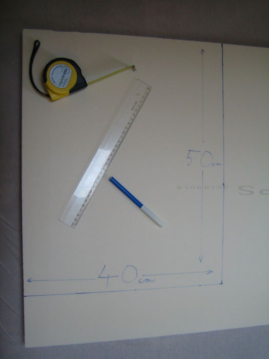Polystyren se naměří na rozměr štítu (max 50x40cm či kruh o maximálním průměru 50cm) a vyřízne
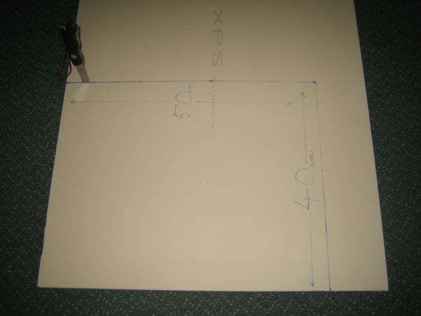 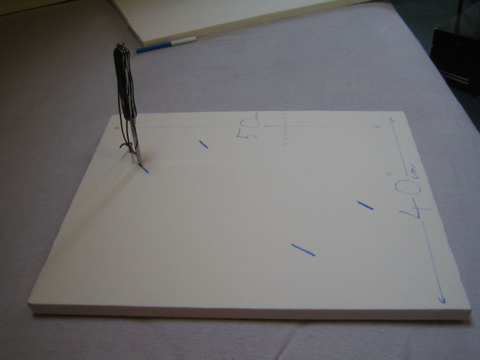V takto získaném štítu se udělají otvory na popruhy, umožňující pohodlné držení štítu. Doporučujeme naplánovat držení do uhlopříčky štítu - zkušení bojovníci o tomto tvrdí, že tak lze lépe krýt nepřátelské rány.
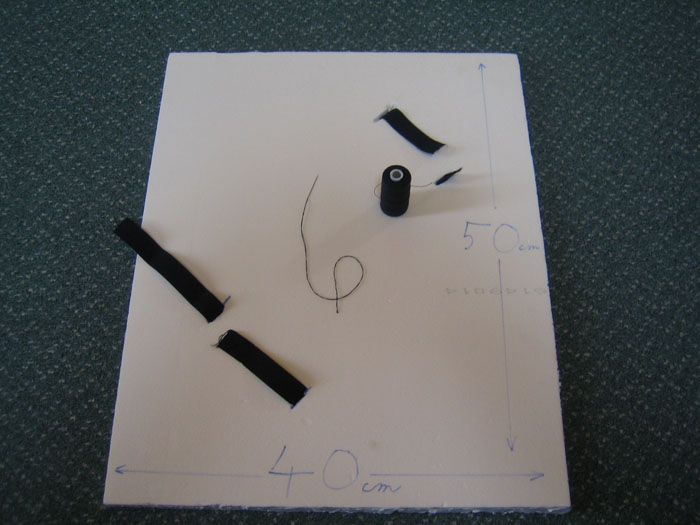Získanými otvory se protáhne širší guma, kterou je možno koupit v jakékoliv galanterii.
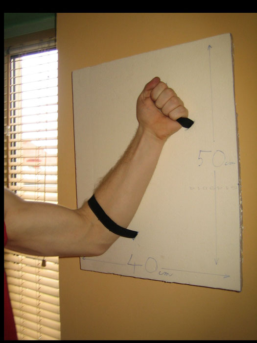Následně vyřízneme druhou vrstvu štítu.
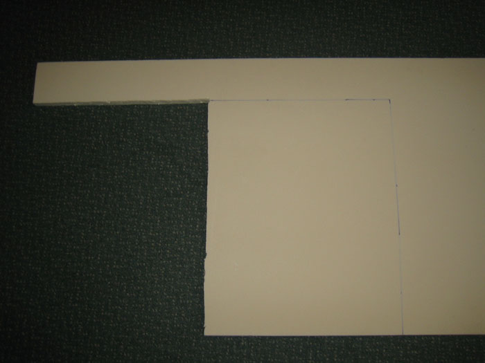Vybereme vhodné lepidlo, které nerozleptá polystyren.
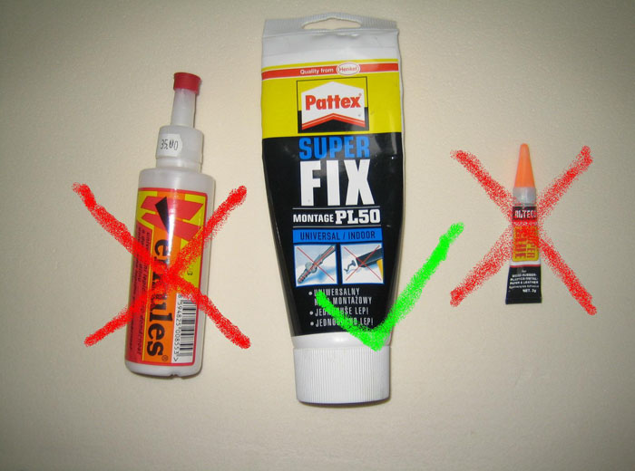a obě dvě části štítu slepíme tak, aby jsme zakryli neestetické popruhy na přední straně.
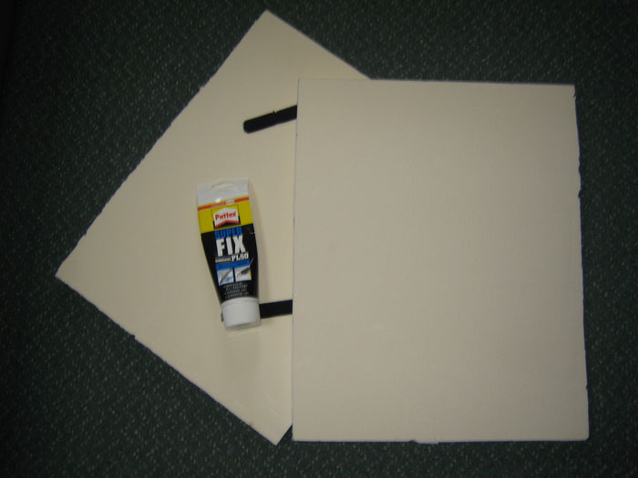 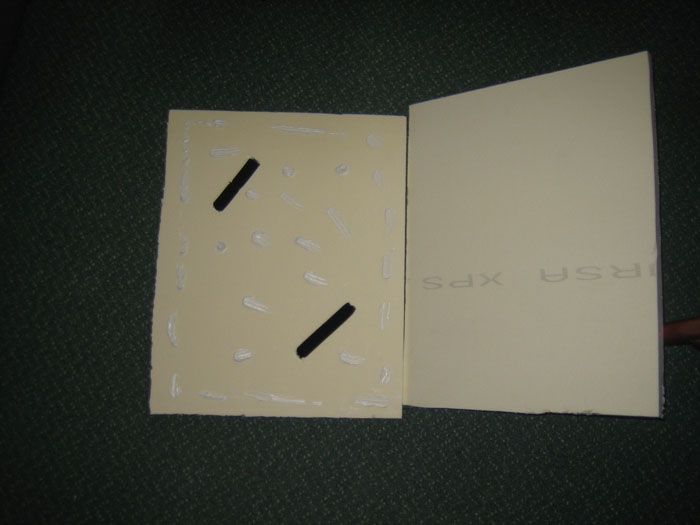Pořádně zatížíme a necháme zaschnout.
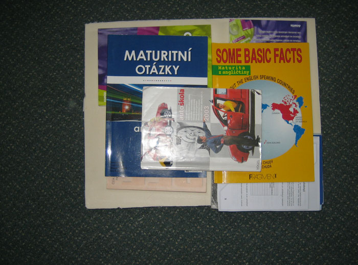Následně doporučujeme štít nabarvit podle příslušné armádní barvy a ozdobit nějakou bojovou kresbou na přední straně.
Pro zvýšení odolnosti štítu doporučujeme celý štít pečlivě oblepit průhlednou izolepou.


Recesní bitva na motivy Trójských válek
Akci pořádají Instruktoři Brno, www.instruktori.cz
Matěj Klusáček, Olajda Prokešová, Ivo Hrdina, Matěj Glum Píro, Petr Nilius, Lucka Molková